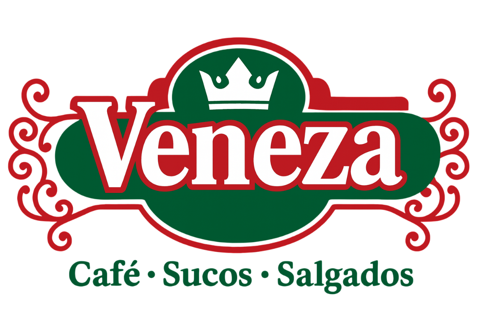

Coxinha
Recheada com frango e catupiry.

Salgados, lanches e pães assados na hora, no centro da cidade desde 1990.
Ver cardápioDeslize ou use as setas para ver todos os salgados.
Recheada com frango e catupiry.

Crocante por fora e cremosa por dentro.

Tradicional, com recheio de frango.

Diversos sabores, como carne, frango e queijo.

Hambúrguer fechado, recheado com presunto e queijo.

Pães de queijo de vários tamanhos, assados na hora.

Sanduíche leve, com pão macio e recheio simples.
Frito, de massa fina, recheado com carne, frango ou queijo.

Sanduíche aquecido na chapa, com presunto e queijo.

Salsicha envolvida em massa e frita.

Massa de trigo e carne temperada, recheado com queijo.

Coca-Cola, Sprite, Fanta e outros.

Expresso, cappuccino e mais.

Laranja, uva, maracujá, pêssego e outros sabores.
A Panificadora e Lanchonete Veneza fica no centro de Auriflama - SP e é um dos estabelecimentos tradicionais da cidade, fundado em 16 de fevereiro de 1990. Sob a direção de Wilson Loquette, atua no ramo de lanchonetes, casas de chá e de sucos, com produtos de qualidade e atendimento acolhedor.
O nome "Veneza" homenageia a cidade italiana admirada pelos proprietários, que quiseram trazer ao negócio um pouco do charme e da tradição de lá. Ao longo dos anos, a Veneza virou ponto de encontro de moradores e visitantes em busca de bons lanches, bebidas e momentos agradáveis.
Com mais de três décadas de história, mantém o compromisso com a qualidade e conquista clientes pela tradição e pelo sabor.